MAIN DAY PILLAR
METAL
홍길동님의 주된 기운은 금이며, 신금 일간에 해당합니다. 신금 일간은 안정성과 지속성을 중시하는 기운입니다. 기존 환경을 정교하게 다듬으며, 즉흥보다 누적된 판단을 신뢰하는 타입입니다.
NAME. 홍길동
POB. 서울, 대한민국
SEX. 남성
DOB. 2000.01.01
TOB. 23:30

SAJU ANALYSIS
사주의 네 기둥을 바탕으로 분석한 미래의 방향들입니다. 자신의 메인 기운과 부족한 기운을 이해하고 고민 사항을 보완해보세요.
General Overview
홍길동님의 주된 기운은 금이며, 신금 일간에 해당합니다. 신금 일간은 안정성과 지속성을 중시하는 기운입니다. 기존 환경을 정교하게 다듬으며, 즉흥보다 누적된 판단을 신뢰하는 타입입니다.
NAME. 홍길동
POB. 서울, 대한민국
SEX. 남성
DOB. 2000.01.01
TOB. 23:30

사주명리학에서 사주 팔자는 네 기둥으로 이루어지며, 오행(다섯 가지 기운)의 배치로 구성됩니다. 홍길동님의 사주는 네 가지 오행으로 구성되어 있습니다.

2026 Guidance
SUBTLE CHANGE
올해는 화(火)의 영향으로 인해 전환을 시도하려는 내부 움직임이 평소보다 강하게 나타납니다.